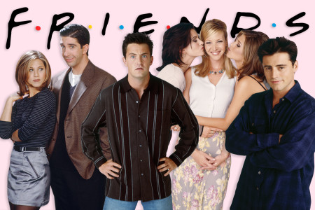
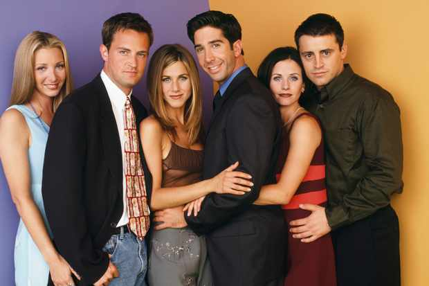
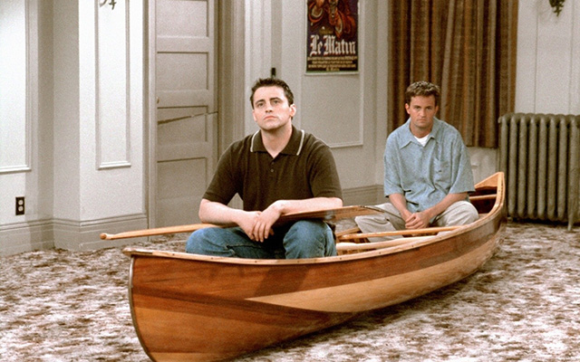
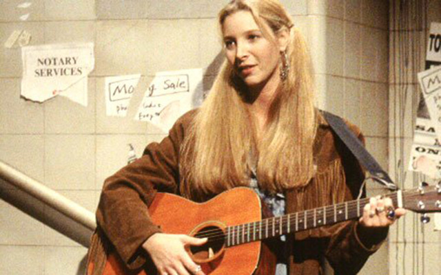
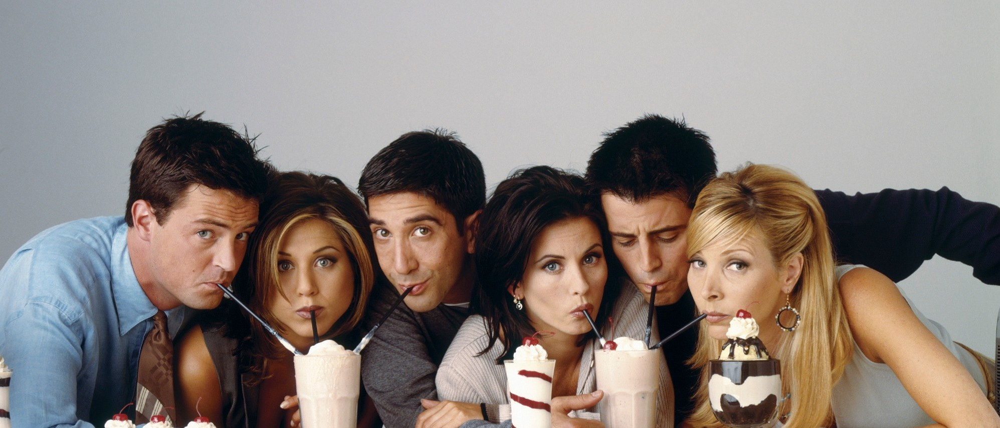

Що таке "Друзі"?
«Дру́зі» (англ. «Friends») — популярний американський сітком, про групу з шести друзів, що живуть у Нью-Йорку. З 1994 по 2004 було знято 236 серій (епізодів), які демонструвалися на телеканалі NBC. Серіал із великим успіхом демонструвався в різних країнах світу, і за свої 10 сезонів на телебаченні дістав величезну кількість нагород (Emmy і «Золотий глобус»).
Серіал «Друзі» був спродюсований компанією «Брайт/Кауффман/Крейн продакшенс» (англ. Bright/Kauffman/Crane Productions) спільно зі студією Warner Bros. Television, прем'єрні покази транслювалися американським телеканалом NBC (з 22 вересня 1994 по 6 травня 2004). Фінальний епізод серіалу зайняв четверте місце в рейтингу останніх епізодів телесеріалів — у прем'єрному ефірі його бачили 52,5 мільйона чоловік.
Шестеро молодих людей, що знімають затишну квартиру в найвеселішому богемному районі Нью-Йорка — «Вест Вілледж», завоювали загальну любов спочатку у Сполучених Штатах, а потім і за їхніми межами. Їхні жарти стають культовими, шанувальники наслідують їх у всьому — манера одягатися, стрижки, улюблені фрази. Веселі і привабливі герої «Друзів» — прості американські хлопці та дівчата. Легковажна Рейчел, красуня Моніка, відома своїми невдалими романами, веселий Чендлер, сентиментальна Фібі, красень Джої, що мріє стати відомим актором, добродушний інтелектуал Рос. Вони закохуються, шукають роботу, сваряться, одружуються, розлучаються, їм весь час бракує грошей. Пригоди «прекрасної шістки» продовжуються, на декого з них чекають великі зміни в особистому житті. Історія комедійного серіалу «Друзі» — поза сумнівом, одна з найпопулярніших.
Починаючи від 1996 року актори отримували гонорар у сто тисяч доларів за серію. А до кінця серіалу кожен із шести акторів, що грає одного з друзів, заробляв по 1 000 000 доларів за серію. Вартість показу 30-секундного рекламного ролика під час фінальних серій досягала 2 000 000 доларів США. Завершальну серію було випущено на DVD вже через 5 днів після прем'єри на телебаченні. Серіал зробив значний внесок і в поп-культуру. Діалоги персонажів порівнюють із діалогами з фільмів Вуді Аллена. Багато жартів стали цитувати (наприклад, коронна фраза Джої Тріббіані, якою він починав знайомство з черговою дівчиною, — «How you doin?» (буквально перекладається: «Як життя?») — зараз іноді жартома говорять одне одному при зустрічі. Нервова фраза Моніки «I know» («Я знаю!»), звичайно, була вигадана не нею, але, коли її вимовляють, мимоволі копіюють її інтонацію. Крім того, зачіска Рейчел стала популярною серед багатьох жінок. І, звичайно, назва і герої серіалу «Друзі» стали брендом, який широко використовується для розповсюдження фірмової продукції.
Чому варто подивитися "Друзів"?


1. Хоч яким жахливим був би ваш настрій, «Друзі» вмить піднімуть його іскрометними жартами і невичерпною позитивною енергією. Буквально пару серій, і життя знову видасться вам яскравим.
2. Скетчком «Друзі» визнаний одним із кращих комедійних серіалів в історії американського телебачення: нагороджений шістьма преміями «Еммі» і «Золотим глобусом»
3. Прекрасна Дженніфер Еністон у ролі Рейчел привернула багато шанувальників до скетчкому. І нехай спершу вони захопилися актрисою, після їх серйозно захопив і сам сюжет.
4. За десять сезонів у «Друзях» були показані тисячі життєвих ситуацій – у деяких із них ви легко впізнаєте себе, своїх близьких і друзів-приятелів.
2. Скетчком «Друзі» визнаний одним із кращих комедійних серіалів в історії американського телебачення: нагороджений шістьма преміями «Еммі» і «Золотим глобусом»
3. Прекрасна Дженніфер Еністон у ролі Рейчел привернула багато шанувальників до скетчкому. І нехай спершу вони захопилися актрисою, після їх серйозно захопив і сам сюжет.
4. За десять сезонів у «Друзях» були показані тисячі життєвих ситуацій – у деяких із них ви легко впізнаєте себе, своїх близьких і друзів-приятелів.


5. За десять років у серіалі знялися такі світові зірки як Джордж Клуні, Жан-Клод Ван Дамм, Джулія Робертс, Бен Стіллер, Робін Вільямс, Хью Лорі, Ральф Лорен, Різ Візерспун, Брюс Вілліс, Бред Пітт, Алек Болдуїн та багато інших . До речі, саме на зйомках «Друзів» Еністон познайомилася з красенем Піттом, після чого у них зав’язався бурхливий роман.
6. Веселі та кумедні, іноді дурні пісеньки Фібі не залишать байдужими нікого. Заряд позитиву і веселощів вам забезпечений.
7. Якщо вам здається, що ваші стосунки зайшли у глухий кут, то ви просто зобов’язані простежити за розвитком любовної лінії між Россом і Рейчел. Завдяки цим двом ви зрозумієте, що у вас ще все просто чудово. До речі, пара Росс-Рейчел увійшла в топ-30 кращих телевізійних пар за версією «TV Guide».
8. І нарешті дотепні жарти Чендлера, яких у кожній серії вистачає, стануть причиною відмінного настрою і приводом для постійного цитування в дружніх компаніях.
6. Веселі та кумедні, іноді дурні пісеньки Фібі не залишать байдужими нікого. Заряд позитиву і веселощів вам забезпечений.
7. Якщо вам здається, що ваші стосунки зайшли у глухий кут, то ви просто зобов’язані простежити за розвитком любовної лінії між Россом і Рейчел. Завдяки цим двом ви зрозумієте, що у вас ще все просто чудово. До речі, пара Росс-Рейчел увійшла в топ-30 кращих телевізійних пар за версією «TV Guide».
8. І нарешті дотепні жарти Чендлера, яких у кожній серії вистачає, стануть причиною відмінного настрою і приводом для постійного цитування в дружніх компаніях.
